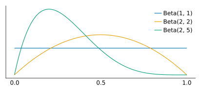
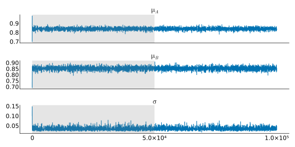
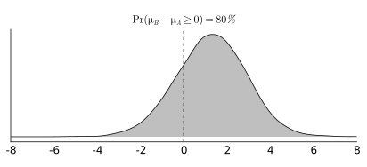

Based on the book by Box, Hunter, and Hunter: Statistics for Experimenters
Chapter 3: Comparing Two Entities: Reference Distributions, Tests, and Confidence Intervals
Introduction
In Statistics for Experimenters we are shown an example of comparing two methods in a chemical manufacturing plant in an attempt to understand if one method has a significantly better yield than the other. I will present the data and the original model and then we’ll model this comparison using Bayesian methods.
Roadmap
- The original question and the frequentist approach to comparing means
- A Bayesian approach to the \(t\)-test
- Summary of our analysis results and potential improvements
The original question and the \(t\)-test
An experiment was performed on a manufacturing plant by making in sequence \(10\) batches of a chemical using a standard production method \((A)\) followed by \(10\) batches using a modified method \((B)\). What evidence do the data provide that method \(B\) gives higher yields than method \(A\)?
Visualizing the data
using DataFrames, CairoMakie, Statistics
# prepare dataframe
time = 1:1:20
method = repeat(["A", "B"], inner = 10)
yield = [89.7, 81.4, 84.5, 84.8, 87.3, 79.7, 85.1, 81.7, 83.7, 84.5, 84.7, 86.1,
83.2, 91.9, 86.3, 79.3, 82.6, 89.1, 83.7, 88.5]
data = DataFrame(time = time, method = method, yield = yield)
first(data, 5)| time | method | yield |
|---|---|---|
| 1 | A | 89.7 |
| 2 | A | 81.4 |
| 3 | A | 84.5 |
| 4 | A | 84.8 |
| 5 | A | 87.3 |
The averages are shown for both of the methods so we have a crude difference in yield of around \(1.3\) between these two methods. But is this average difference due to random chance?
\[ \bar y_A = 84.24, \bar y_B = 85.54 \]
# plot attributes
CairoMakie.activate!(type = "svg")
set_theme!(theme_minimal())
fig = Figure(resolution = (650, 300))
ax = fig[1, 1] = Axis(fig, xlabel = "time", ylabel = "yield", xticks = 1:1:20)
# calculate the mean for each group
datagroup = groupby(data, :method)
datamean = transform(datagroup, :yield => mean)
methoda = datamean[datamean.method .== "A",:]
methodb = datamean[datamean.method .== "B",:]
# plot it out
scatter!(methoda.time, methoda.yield, label = "Process A")
lines!(methoda.time, methoda.yield_mean)
scatter!(methodb.time, methodb.yield, label = "Process B")
lines!(methodb.time, methodb.yield_mean)
fig[2,1] = Legend(fig, ax, framevisible = false, orientation = :horizontal)
fig
The \(t\)-test results
Where the sample averages for each method are \(\bar y_A\) and \(\bar y_B\), the population difference is given as \(\delta = \eta_B - \eta_A\), the pooled estimate of \(\sigma\) is given as \(s\), and the number of observations for each method are \(n_A\) and \(n_B\). Then we can calculate the \(t\)-statistic:
\[ t_0 = \frac{(\bar y_B - \bar y_A) - \delta_0}{s \sqrt{1 / n_B + 1 / n_A}} \]
For the null hypothesis we have \(\delta_0 = 0, t_0 = 1.30/1.47 = 0.88\) with \(\nu = 18\) degrees of freedom. Then we want the following for our significance level:
\[ \Pr(t \ge 0.88) = 19.5\% \]
This reference distribution assumes the random sampling model and the observed difference then has a significance probability of \(19.5\%\) which would provide little evidence against the hypothesis that \(\eta_B - \eta_A = 0\).
Visualizing the \(t\)-test results
Scaling a \(t\)-distribution by the standard error of the difference between \(\bar y_B\) and \(\bar y_A\) and looking at the probability density that exists above our estimated mean difference of \(1.3\) we can visualize the results of our test. Seeing approximately \(19.5 \%\) of the probability mass above this difference:
using Distributions
# number of obs
n_a = nrow(methoda)
n_b = nrow(methodb)
# average yield per method
avg_a = mean(methoda.yield)
avg_b = mean(methodb.yield)
diff_ab = avg_b - avg_a
# sample variance
s2_a = sum((methoda.yield .- avg_a).^2)
s2_b = sum((methodb.yield .- avg_b).^2)
# degrees of freedom
nu = n_a + n_b - 2
# pooled estimate of σ^2
pools2 = (s2_a + s2_b) / nu
# estimated standard error of y_B - y_A
std_err = sqrt(pools2/5)
# t-statistic
tstat = diff_ab / std_err
# significance level
sig_level = 1 - cdf(TDist(nu), tstat)
# plotting attributes
fig2 = Figure(resolution = (600, 300))
ax2 = Axis(fig2[1, 1], title = "Scaled t-distribution")
# A scaled t-distribution by the standard error of y_B - y_A
scaled_dist = LocationScale(0.0, std_err, TDist(nu))
# get density line and clipped values
xs2 = -5:0.001:5
post_range = pdf.(scaled_dist, xs2)
post_clip = [x < diff_ab ? 0 : pdf(scaled_dist, x) for x in xs2]
# plot
lines!(xs2, post_range)
band!(xs2, 0, post_clip)
vlines!(ax2, [diff_ab], color = :black, linestyle = :dash)
hideydecorations!(ax2)
fig2
A Bayesian approach
Choosing our priors
Choosing our priors is the first step in this approach. Since we’ll be modeling the average yield for each method I will begin by considering how yield is defined and what that can tell us about its order of magnitude.
Percent yield is a measurement of how successful a chemical reaction has been:
…the theoretical yield, the maximum amount of product that can be formed from the given amounts of reactants. The actual yield is the amount of product that is actually formed when the reaction is carried out in the laboratory. The percent yield is the ratio of the actual yield to the theoretical yield, expressed as a percentage. \[ \text{Percent Yield} = \frac{\text{Actual Yield}}{\text{Theoretical Yield}} \times 100\% \]
Thinking in distributions
Considering that yield here is a percentage I’d think a decent prior probability distribution for the average yield would be a Beta distribution:
# plotting attributes
fig3 = Figure(resolution = (550, 250))
ax3 = Axis(fig3[1, 1])
beta_dist = Beta(1, 1)
beta_dist2 = Beta(2, 2)
beta_dist3 = Beta(2, 5)
# get density line and clipped values
xs3 = 0.:0.001:1
post_range2 = pdf.(beta_dist, xs3)
post_range3 = pdf.(beta_dist2, xs3)
post_range4 = pdf.(beta_dist3, xs3)
# plot
lines!(xs3, post_range2, label = "Beta(1, 1)")
lines!(xs3, post_range3, label = "Beta(2, 2)")
lines!(xs3, post_range4, label = "Beta(2, 5)")
hideydecorations!(ax3)
axislegend()
fig3
Since percent yield could reasonably be anywhere between \(0\) and \(1\) but with those outcomes being very unlikely I think a Beta(2, 2) is an adequate weakly informative prior.
Prior for the variance
We will be modeling the variance as being pooled between both methods: we will have two means but one shared variance. The variance must be positive and since our means are scaled between \([0,1]\) then the standard deviation should be close to this range.
# plotting attributes
fig4 = Figure(resolution = (550, 250))
ax4 = Axis(fig4[1, 1])
exp_dist = Exponential(.50)
exp_dist2 = Exponential(.25)
exp_dist3 = Exponential(.10)
# get density line and clipped values
xs4 = 0.:0.001:1.
prior_range = pdf.(exp_dist, xs4)
prior_range2 = pdf.(exp_dist2, xs4)
prior_range3 = pdf.(exp_dist3, xs4)
# plot
lines!(xs4, prior_range, label = "Exponential(0.50)")
lines!(xs4, prior_range2, label = "Exponential(0.25)")
lines!(xs4, prior_range3, label = "Exponential(0.10)")
hideydecorations!(ax4)
axislegend()
fig4
Given that the Exp(0.1) distribution is almost completely under \(1\) it will be an adequate prior for \(\sigma\).
Our probability model
\(\mu_A\) and \(\mu_B\) are the estimated population means for each of the methods and they have a shared variance term \(\sigma^2\). The priors for these are the following:
\[ \begin{aligned} &\mu_A \sim \text{Beta}(2,2) \\ &\mu_B \sim \text{Beta}(2,2) \\ &\sigma \sim \text{Exp}(0.10) \end{aligned} \]
The likelihood is broken into two parts for each of the methods:
\[ \begin{aligned} &y_A \sim \text{Normal}(\mu_A, \sigma) \\ &y_B \sim \text{Normal}(\mu_B, \sigma) \end{aligned} \]
MCMC and Metropolis sampling
Multiplying Beta and Exponential priors with a Normal likelihood results in a non-conjugate case. So in this example it may make more sense to utilize Markov Chain Monte Carlo (MCMC) methods to estimate our joint probability model.
Markov Chain Monte Carlo gets part of its name from the Markov property:
Given the present, the future is independent of the past.
I decided to implement the Metropolis algorithm as a pedagogical exercise below but I’d definitely recommend using probabilistic programming languages like Stan, Turing, or PyMC in practice.
Using the Metropolis algorithm to sample the target distribution and removing burn-in samples results in the following summary for our parameters:
methoda_yield = methoda.yield / 100
methodb_yield = methodb.yield / 100
function likelihood(param)
mu1 = param[1]
mu2 = param[2]
sd = param[3]
singlelike1 = logpdf.(Normal(mu1, sd), methoda_yield)
singlelike2 = logpdf.(Normal(mu2, sd), methodb_yield)
singlelikelihood = vcat(singlelike1, singlelike2)
sumll = sum(singlelikelihood)
return(sumll)
end
function prior(param)
mu1 = param[1]
mu2 = param[2]
sd = param[3]
mu1prior = logpdf(Beta(2,2), mu1)
mu2prior = logpdf(Beta(2,2), mu2)
sdprior = logpdf(Exponential(0.10), sd)
return(mu1prior + mu2prior + sdprior)
end
function posterior(param)
return likelihood(param) + prior(param)
end
function proposalfunction(param)
# enforced positive support but not sure how other PPLs enforce this
return abs.(rand(MvNormal(param, [0.001 0 0; 0 0.001 0; 0 0 0.0005])))
end
function run_metropolis_MCMC(startvalue, iterations)
chain = Array{Float64,2}(undef, iterations + 1, 3)
chain[1,:] = startvalue
for i in 1:iterations
proposal = proposalfunction(chain[i,:])
probab = exp(posterior(proposal) - posterior(chain[i,:]))
r = min(1, probab)
if rand(Uniform()) <= r
chain[i+1,:] = proposal
else
chain[i+1,:] = chain[i,:]
end
end
return chain
end
startvalue = [0.7, 0.7, 0.1]
chain_length = 100_000
using Random:seed!
seed!(555)
chain = run_metropolis_MCMC(startvalue, chain_length)
burnIn = convert(Int, chain_length / 2)
chain1 = last(chain[:,1], burnIn)
chain2 = last(chain[:,2], burnIn)
chain3 = last(chain[:,3], burnIn)
DataFrame(
mu_a = mean(chain1),
mu_astd = std(chain1),
mu_b = mean(chain2),
mu_bstd = std(chain2),
sigma = mean(chain3),
sigma_std = std(chain3)
)| mu_a | mu_astd | mu_b | mu_bstd | sigma | sigma_std |
|---|---|---|---|---|---|
| 0.841692 | 0.0112674 | 0.854442 | 0.0113898 | 0.0352205 | 0.00627626 |
Burn-in
After utilizing MCMC to sample this model we should throw away some portion of our chain. A rule-of-thumb for Metropolis sampling is to only use half of your total samples and consider the first half the burn-in (exploratory) phase and discard those samples.
figs = Figure(resolution = (800, 400))
ga = figs[1, 1] = GridLayout()
gb = figs[2, 1] = GridLayout()
gc = figs[3, 1] = GridLayout()
axs1 = Axis(ga[1, 1])
axs2 = Axis(gb[1, 1])
axs3 = Axis(gc[1, 1])
lines!(axs1, 1:1:(chain_length+1), chain[:,1])
lines!(axs2, 1:1:(chain_length+1), chain[:,2])
lines!(axs3, 1:1:(chain_length+1), chain[:,3])
vspan!(axs1, [0, chain_length/2], [0, 1], color = (:gray, 0.2))
vspan!(axs2, [0, chain_length/2], [0, 1], color = (:gray, 0.2))
vspan!(axs3, [0, chain_length/2], [0, 1], color = (:gray, 0.2))
Label(ga[1, 1, Top()], L"\mu_A", valign = :bottom, textsize = 20)
Label(gb[1, 1, Top()], L"\mu_B", valign = :bottom, textsize = 20)
Label(gc[1, 1, Top()], L"\sigma", valign = :bottom, textsize = 20)
hidexdecorations!.((axs1, axs2))
figs
Samples from the joint distribution
Here are the marginal distributions for each of our estimated parameters:
figs2 = Figure(resolution = (1920/2, 1080/2))
ga2 = figs2[1, 1] = GridLayout()
gb2 = figs2[2, 1] = GridLayout()
gc2 = figs2[3, 1] = GridLayout()
axs11 = Axis(ga2[1, 1])
axs21 = Axis(gb2[1, 1])
axs31 = Axis(gc2[1, 1])
hist!(axs11, chain1)
hist!(axs21, chain2)
hist!(axs31, chain3)
linkxaxes!(axs11, axs21)
xlims!(axs31, (0.0, 0.1))
hideydecorations!.((axs11, axs21, axs31))
Label(ga2[1, 1, Top()], L"\mu_A", valign = :bottom, textsize = 30)
Label(gb2[1, 1, Top()], L"\mu_B", valign = :bottom, textsize = 30)
Label(gc2[1, 1, Top()], L"\sigma", valign = :bottom, textsize = 30)
figs2
Comparing the means using samples
Now that we have samples for the mean of both methods how can we compare them? Simply by taking a difference of the samples we will get a distribution comparing the two means.
What’s gained from this approach is that we can now see the probability of method \(B\) having an increased yield to method \(A\). Seeing how many samples are above \(0\) and then taking the average of those results shows that \(80\%\) of the probability mass is above zero.
meandiff = (chain2 - chain1) * 100
# @show probgt0 = mean(meandiff .> 0) # just for checking
fig5 = Figure(resolution = (550, 250))
ax5 = Axis(fig5[1, 1], title = L"\Pr(\mu_B - \mu_A \geq 0) = 80 %")
density!(meandiff, bandwidth = 0.4, color =(:grey, 0.5), strokewidth=1)
vlines!(ax5, [0.0], color = :black, linestyle = :dash)
xlims!(-8, 8)
hideydecorations!(ax5)
fig5
Analysis results and improvements
Summary of results
The frequentist \(t\)-test approach results in a non-significant value. We fail to reject our null hypothesis that these samples come from a single common population distribution.
The bayesian approach gives us an \(80 \%\) probability that method \(B\) improves overall yield compared to method \(A\).
In a business context I could see the bayesian result being far more useful than failing to reject our null hypothesis. A company can weigh their options between method \(B\) and method \(A\). Decide on what’s more economical and have some percentage to wrap their heads around about potential improvement.
Potential Improvements
This particular example was given in the text by Box, Hunter, and Hunter to demonstrate a case where the \(t\)-test may be an inappropriate statistical test. The \(t\)-distribution may be a poor choice for a reference distribution. The reason why this is the case is due to autocorrelation and Student’s \(t\) test assuming errors are independent and identically distributed (iid).
The exact reason behind the correlated errors was given:
In this particular process the yield was determined by measuring the volume of liquid product in each successive batch, but because of the design of the system, a certain amount of product was left in the pipes and pumps at each determination. Consequently, if slightly less was pumped out on a particular day, the recorded yield would be low but on the following day it would tend to be high… Such an effect would produce a negative correlation between successive yields such as that found.
Moving forward we should account for this and attempt to model the autocorrelation that exists between successive yields.